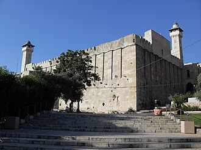

简介
Le tombeau des Patriarches est un lieu saint pour les trois religions abrahamiques : judaïsme, christianisme et islam, situé dans la vieille ville d'Hébron, au sud-ouest de la Cisjordanie. Édifié durant la période du Second Temple sur un ensemble de grottes, le monument abrite des cénotaphes construits au-dessus de tombes attribuées aux patriarches bibliques Abraham, Isaac, Jacob et à leurs épouses les matriarches Sarah, Rébecca et Léa. Un édifice accolé au mur sud-ouest abrite un cénotaphe attribué à Joseph. Selon la tradition juive, la caverne est aussi le lieu de sépulture d'Adam et Ève.
المسجد الإبراهيميّ، أو الحرم الإبراهيميّ الشريف، وهو عند اليهود باسم كهف البطاركة أو مغارة المكفيلة ، يُعتبر أقدم بناء مُقدّس مُستخدم حتى اليوم دون انقطاع تقريباً، وهو رابع الأماكن المُقدّسة عند المسلمين، وثاني الأماكن المقدّسة عند اليهود بعد جبل الهيكل. جاءت قُدسيته كونه بُني فوق مغارة مدفونٌ فيه كلٌّ من النبي إبراهيم وزوجته سارة، وولدهما إسحاق وولده يعقوب وزوجتيهما رفقة وليئة، كما يُوجد بعض الروايات تذكر أن يوسف وآدم وسام ونوح مدفونون هناك أيضاً.
The Cave of the Patriarchs or Tomb of the Patriarchs, known to Jews by its Biblical name Cave of Machpelah and to Muslims as the Ibrahami Mosque, or Sanctuary of Ibrahim, is a series of caves situated in the heart of the Old City of Hebron in the West Bank, 30 kilometres (19 mi) south of Jerusalem. According to the Abrahamic religions, the cave and adjoining field were purchased by Abraham as a burial plot. The site is considered a holy place in Judaism, Christianity, and Islam.
Atababalar Mağarası, Yahudiler tarafından söylenen ismiyle Makpelah Mağarası veya Müslümanlar ve Araplar tarafından söylenen ismiyle İbrahim Camii (Arapça: الحرم الإبراهيمي,
Gua Makhpela atau Gua Para Bapa Leluhur adalah serangkaian gua yang terletak di jantung Kota Tua Hebron di Tepi Barat, Palestina, berjarak 30 kilometer selatan Yerusalem. Tempat ini adalah tempat pemakaman dari tokoh-tokoh yang dihormati dalam agama Abrahamik, yakni Abraham/Ibrahim, Sara/Sarah, Ishak/Ishaq, Ribka, Yakub/Ya'qub, dan Lea. Situs ini berada di Kota Tua Hebron di kawasan Palestina. Tugu makam dari keenam tokoh ini berada di dalam bangunan, sedangkan jenazah mereka yang asli dikebumikan di gua yang berada di bawah bangunan. Menurut agama-agama Abrahamik, gua dan ladang di sekitarnya dibeli oleh Abraham sebagai tempat pemakaman. Situs ini dianggap sebagai tempat suci dalam agama Yahudi, Kristen, dan Islam.
ابراہیمی مسجد یا حرم ابراہیمی ایک مسجد ہے جو فلسطینی شہر الخلیل میں واقع ہے۔ اس مسجد کے متعلق کہا جاتا ہے کہ حضرت ابراہیم علیہ السلام نے یہ جگہ اپنی دفن کے لیے ایک شخص سے خریدی تھی۔
Die Machpela, auch Höhle der Patriarchen oder Grab der Patriarchen, ist nach dem Tanach, der hebräischen Bibel, das Familiengrab der Erzeltern der Israeliten: Dort sollen Abraham und Sara, Isaak und Rebekka sowie Jakob und Lea bestattet worden sein. Der Ort liegt am Stadtrand von Hebron und ist für die drei Abrahamsreligionen Judentum, Christentum und Islam bedeutsam.
La Tumba de los Patriarcas está considerada uno de los lugares más sagrados del judaísmo y del islam, y se encuentra en la antigua ciudad de Hebrón, al sudoeste de Cisjordania (Palestina). Según las tradiciones cristianas, judías e islámicas, en la Tumba de los Patriarcas están enterradas tres parejas bíblicas importantes: Abraham y Sara; Isaac y Rebeca; Jacob y Lea. La Tumba de los Patriarcas se encuentra en una cueva sobre la que se construyó una mezquita en tiempos de Saladino, que a su vez fue construida sobre una gran estructura rectangular de la época herodiana. En 2017, la Ciudad Vieja de Hebrón pasó a ser el tercer lugar de Palestina en entrar en la lista de Patrimonio de la Humanidad de la Unesco.
La Tomba dei Patriarchi o Grotta di Macpelà è un complesso architettonico costruito su una serie di grotte sotterranee situate ad Hebron, in Palestina. Il nome ebraico si riferisce sia alla disposizione delle sepolture sia alle coppie bibliche che vi sono sepolte.
O Túmulo dos Patriarcas é considerado como um centro espiritual da antiga cidade de Hebrom, situada na Samaria, no coração da antiga Judeia e sob jurisdição, hoje em dia, da Autoridade Palestina.
De Grot van de Patriarchen, of Grot van Machpéla, of Heiligdom van Abraham is een groep grotten in het midden van het oude centrum van Hebron. Volgens de traditie van alle drie de abrahamitische religies werden op deze locatie de paren Abraham en Sara, Isaak en Rebekka, en Jakob en Lea begraven, terwijl sommige joodse tradities hier ook Adam en Eva aan toevoegen.
麦比拉洞，又名列祖之洞，穆斯林称之为易卜拉欣清真寺，是一系列地下室，位于希伯仑旧城中心。圣经和古兰经都提到，该洞及周围是亚伯拉罕所购买的一块墓地。（创世纪23:17-19；50:13）
マクペラの洞穴 とは、パレスチナ自治区のヨルダン川西岸の都市ヘブロンにある宗教史跡である。この概念は洞穴のみを指すのではなく、境内にある施設全体を指している。ユダヤ教の伝承、並びに旧約聖書の『創世記』によれば、「民族の父母」と呼ばれているアブラハム、サラ、イサク、リベカ、ヤコブ、レアの六人がこの地に埋葬されているという。同史跡はユダヤ教徒やキリスト教だけでなく、イスラム教徒からも神聖視されている。
막벨라굴(히브리어: מערת המכפלה), 또는 족장의 동굴은 팔레스타인 요르단강 서안 지구 헤브론에 있는 종교 유적지로, 아브라함과 사라, 이삭과 리브가, 야곱과 레아의 무덤이다. 동굴 위에는 헤로디언 시대의 커다란 직사각형 인클로저가 있다. 비잔틴 기독교인들은 그것을 점령하고 무슬림 정복 이후 이 곳을 이브라히미 모스크로 개종한 바실리카를 지었다. 십자군은 12세기에 이 유적지를 점령했지만 살라딘에 의해 다시 회수되어 모스크로 다시 개조되었다. 이스라엘은 1967년에 이 유적지를 점령하여 시나고그와 회교 사원으로 구조를 나누었다.
कुलपतियों की गुफा या कुलपतियों का मक़बरा पश्चिमी तट के पुराने हेब्रोन शहर में स्थित गुफाओं की शृंखला है, जिसे यहूदी मकपेला की गुफा और मुसलमान इब्राहीमी मस्जिद, या इब्राहीम का मक़बरा के नाम से जानते हैं। इसे यहूदी धर्म, ईसाई धर्म, और इस्लाम में पवित्र स्थल माना जाता है।
Пеще́ра Патриа́рхов — склеп в древней части Хеврона, в котором, согласно Библии, похоронены праотцы — Авраам, Исаак и Иаков, а также их жёны Сарра, Ревекка и Лия. В иудейской традиции, здесь также покоятся тела Адама и Евы. Согласно Библии, Авраам купил это место у хетта Ефрона за 400 сиклей серебра. Место считается священным в христианстве, иудаизме и исламе.
Patriarkernas grav, även kallad Makpelagrottan av judar och Ibrahim-moskén eller Ibrahims helgedom av muslimer, är ett grottkomplex beläget i hjärtat av Hebrons gamla stad på Västbanken, cirka 30 kilometer söder om Jerusalem. Enligt de abrahamitiska religionerna köptes grottan och det intilliggande fältet av Abraham som begravningsplats. Platsen betraktas som helig inom judendom, kristendom och islam.
Peștera Patriarhilor sau Mormântul Patriarhilor, cunoscut evreilor din Biblie ca Peștera Mahpela, în ebraică מערת המכפלה Mearát Hamakhpelá nume biblic însemnând „peștera dublă”, iar arabilor și musulmanilor ca Sanctuarul Avraamic sau al lui Ibrahim - în arabă: الحرم الإبراهيمي Al Haram al-Ibrahimi este un sanctuar format din mai multe peșteri în inima orașului Hebron din sudul teritoriului cunoscut in prezent ca Cisiordania în sens restrâns,„Malul de vest” sau Iudeea și Samaria. După textul biblic și dupa credințele mozaică, creștină și musulmană, peștera și spațiul din jurul ei a fost cumpărat de Avraam pentru a adăposti cavoul familial.
在地图上
资料与链接
- Wikipédia — Français
- Wikipédia — العربية
- Wikipédia — English
- Wikipédia — Türkçe
- Wikipédia — Bahasa Indonesia
- Wikipédia — اردو
- Wikipédia — Deutsch
- Wikipédia — Español
- Wikipédia — Italiano
- Wikipédia — Português
- Wikipédia — Nederlands
- Wikipédia — 中文
- Wikipédia — 日本語
- Wikipédia — 한국어
- Wikipédia — हिन्दी
- Wikipédia — Русский
- Wikipédia — Svenska
- Wikipédia — Română
- Wikidata — Q204200
数据：维基数据（Wikidata，CC0），每3个月更新一次。年份是该建筑已知最早的建造年代：对于后来才成为清真寺的建筑（如圣索菲亚），则是原建筑的年代。照片：维基共享资源（Wikimedia Commons），作者和许可协议见每张照片的页面。